Known as the City of Three Cultures, this walled city declared a World Heritage Site preserves the layout it had in the Middle Ages, when kings and nobles built numerous palaces and churches that still endure today and have made it one of the most visited cities in Spain.
Toledo express
If you arrive on the wedding day early or only have a few hours to explore the city, this is what we think you shouldn't miss:
The historic center
Wandering aimlessly through the center is, in itself, one of the best plans. Narrow streets, small squares and corners with lots of history at every step.
Toledo Cathedral
One of the city's symbols and a visit that is really worthwhile. Even if you don't go inside, seeing it from the outside is already impressive.
A viewpoint
The views of Toledo from outside the walls are spectacular and very different from what you see inside. Ideal for a first photo of the city.
A historic bridge
Crossing one of the bridges over the Tagus River is a very nice way to enter or leave the historic center.
Suggested route (guide)
• Puerta de Bisagra
• Walk through the Historic Center (Plaza Zocodover)
• Toledo Cathedral
• Walk down to San Martín Bridge
• San Cristobal Walk Viewpoint
Toledo with time
Known as the City of Three Cultures, this walled city declared a World Heritage Site preserves the layout it had in the Middle Ages, when kings and nobles built numerous palaces and churches that still endure today and have made it one of the most visited cities in Spain.
Alcántara Bridge
Almost 100 meters long, this ancient stone bridge of Roman origin over the Tagus River was rebuilt on numerous occasions and during medieval times became the main gateway and control point for goods, pilgrims and residents entering the walled city.
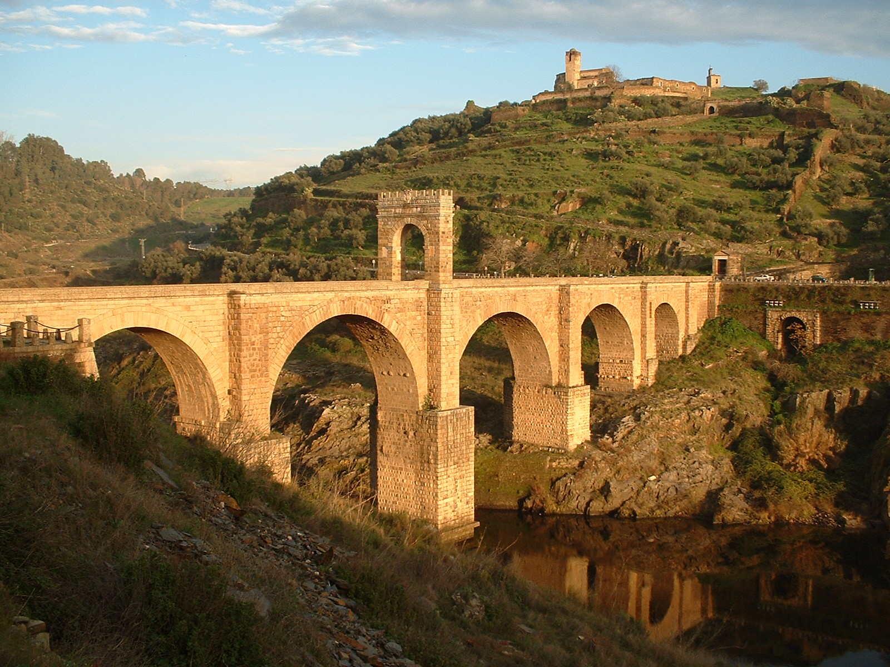
Zocodover Square
This rectangular arcaded square, whose name comes from Arabic and which was Toledo's Main Square for many centuries, is surrounded by buildings of Castilian architecture and has several entrance accesses among which the Arco de la Sangre stands out.
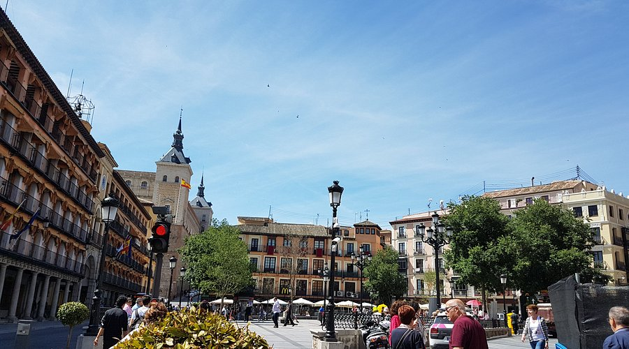
Santa Cruz Museum
Inside the museum there are numerous paintings from the Toledo school of the 16th and 17th centuries, with special attention to some masterpieces by El Greco such as Saint Veronica with the Veil or The Immaculate Conception.
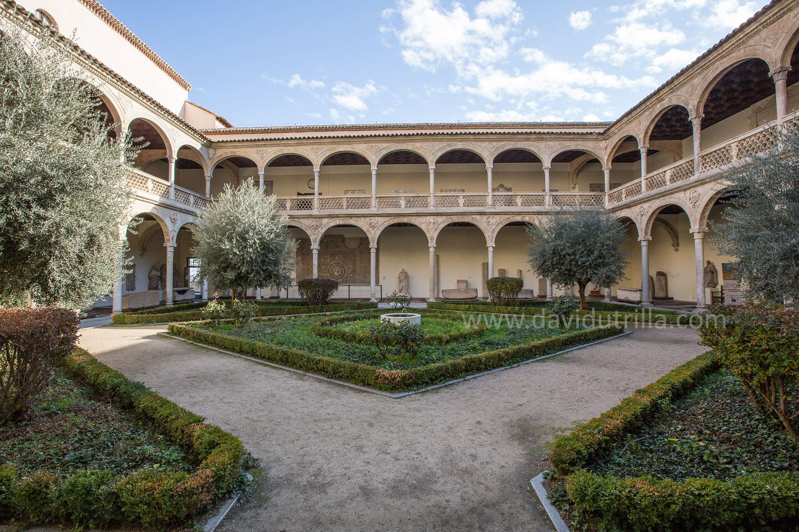
The Alcázar of Toledo
The Alcázar, a medieval fortress in Renaissance style, located in the highest part of the city, is another of the emblematic places to see in Toledo.
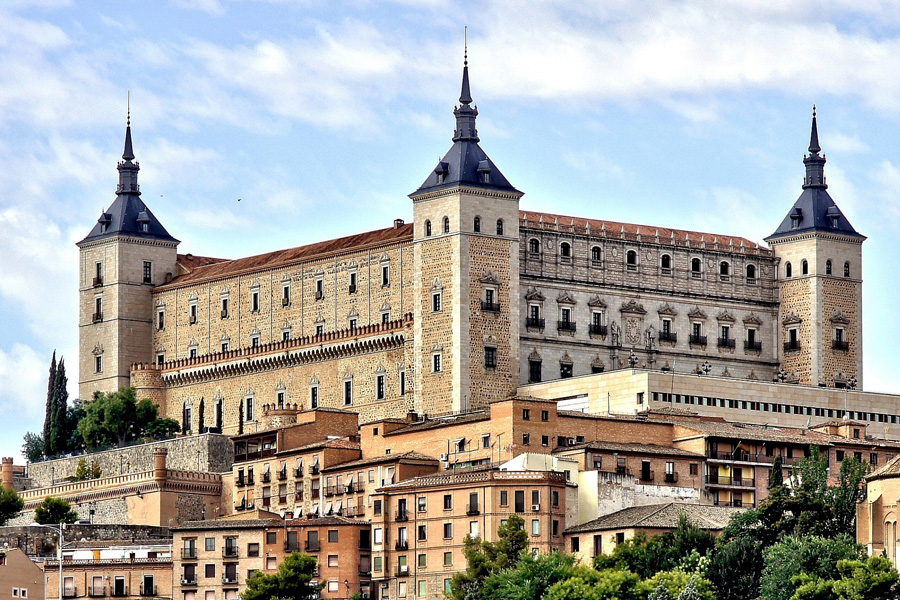
Toledo Cathedral
The Cathedral of Saint Mary, also called the Primate Cathedral of Spain, is one of the most impressive cathedrals in the world and one of the most beautiful places to visit in Toledo.
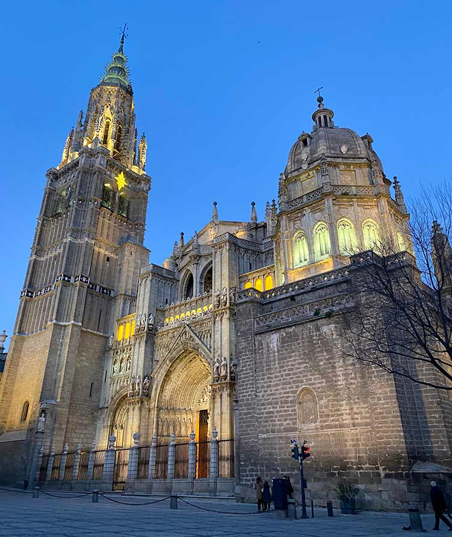
Roman Baths of Toledo
These baths from the 2nd century AD were used by the Romans to bathe, get massages and establish social and commercial relationships and, although they must have had a size of more than 2,000 square meters, free access is only allowed to some areas such as the caldarium or hot room.
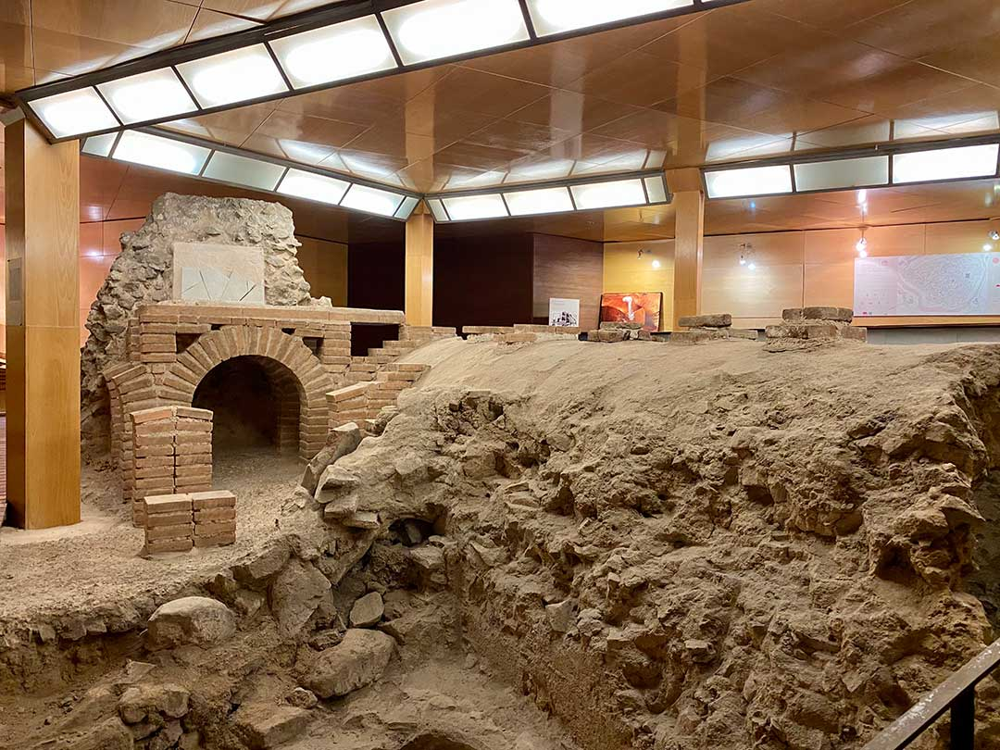
Cave of Hercules
This underground space, covered with a magnificent barrel vault, was used in Roman times as a water supply reservoir, forming part of Toledo's Roman hydraulic network.
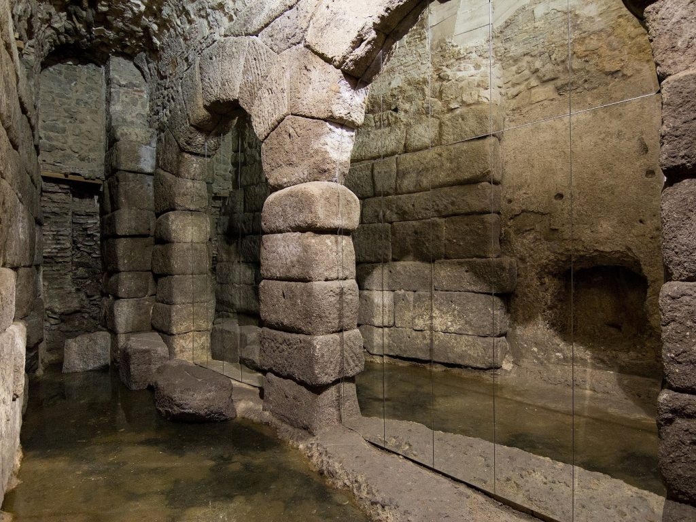
Mosque of Cristo de la Luz
This hermitage or church of Cristo de la Luz was built in 999 as a mosque and is considered the best-preserved building from the Muslim period of the city.

Crossing the Bisagra Gate
This monumental gate of Muslim origin, completely remodeled under the reigns of Charles V and Philip II, is characterized by being composed of two bodies with two high crenellated walls that unite them, forming a beautiful courtyard between them.
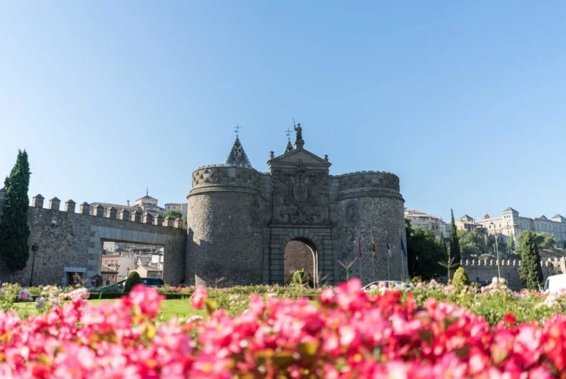
Church of the Jesuits
The most outstanding elements of this church are the facade and the main nave painted white, with two large baroque altarpieces, a dome, several chapels and the main altar.
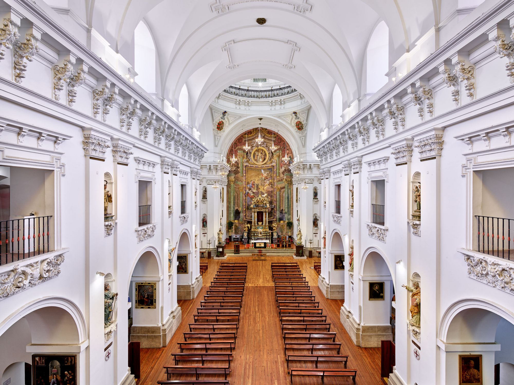
El Greco Museum
Recreating the house that the painter used to work, this museum has managed to gather about twenty canvases made by this brilliant painter who, although born in Crete in 1541, developed most of his work in Toledo.
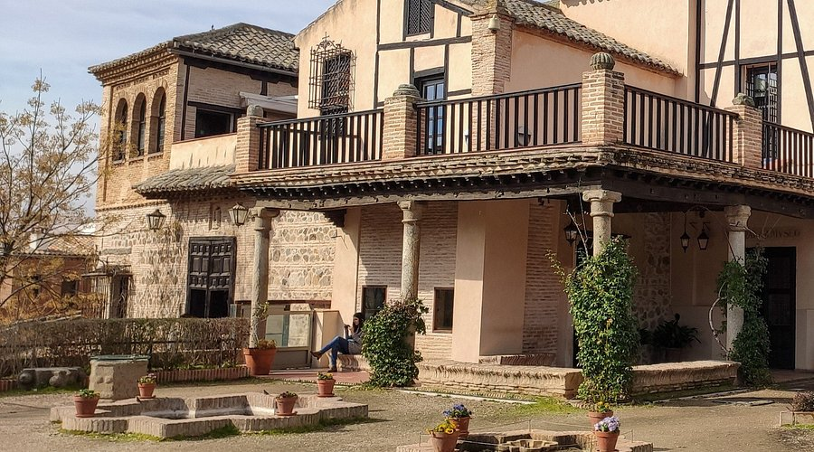
Valle Viewpoint
The Valle Viewpoint is a beautiful place from where you can enjoy a magnificent view of the Tagus River and the entire city of Toledo. This viewpoint is located at the top of the Tagus River valley and offers a spectacular panorama of the city.
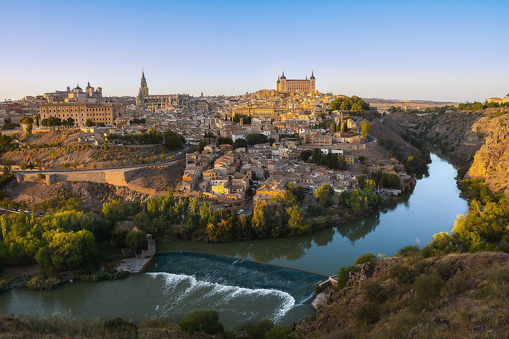
San Cristobal Walk Viewpoint
The San Cristóbal Walk Viewpoint offers stunning views of Toledo. Visitors often highlight the peaceful atmosphere and beautiful views, which include the Tránsito Synagogue, the El Greco Museum, and San Juan de los Reyes.
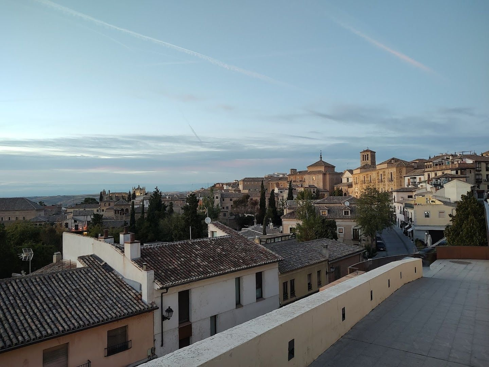
Where to eat in Toledo
In no particular order, but keeping in mind options for all tastes and in all price ranges: